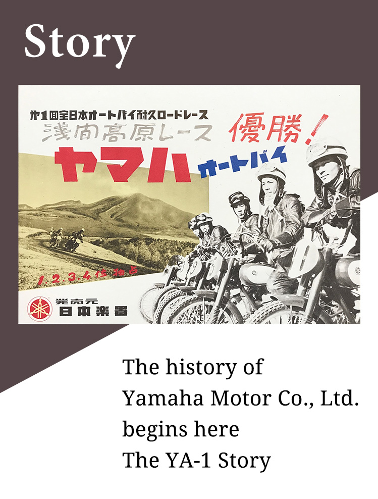
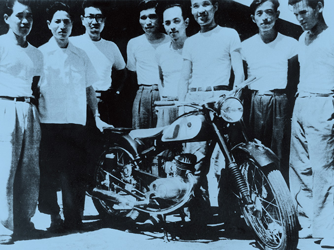
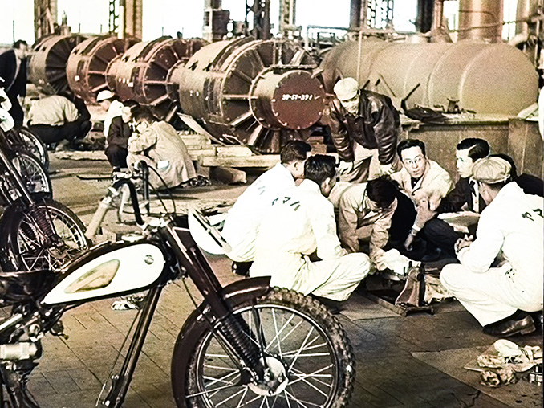
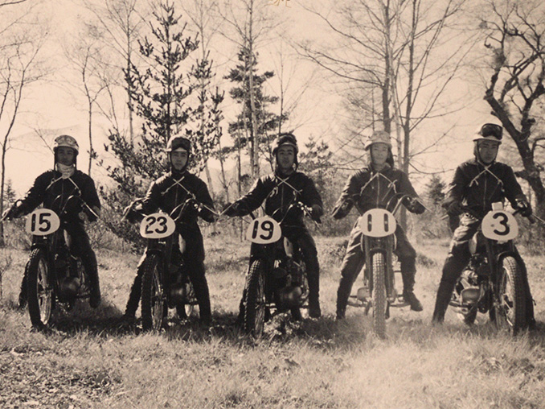

The YA-1 Story
The miraculous story behind the "YA-1", Yamaha Motor’s first motorcycle.

The Founding of Yamaha Motor Co., Ltd.
In 1955, when Yamaha Motor Co., Ltd. was created, Japan was experiencing the economic boom of the mid-1950s. People's homes became filled with electrical appliances such as refrigerators, washing machines, rice cookers, etc., and in the strong words used by an economic white paper it was "no longer post-war".
President Genichi Kawakami of Nippon Gakki Seizo (currently Yamaha Corporation) wondered if they couldn't use the machine tools they had been using to manufacture variable pitch propellers for military aircraft during the war "for some new business," leading him to decide to enter the motorcycle business. During this time, competition between the many post-war motorcycle manufacturers was at its most fierce. They decided that, even if they were the last entrants into the market, they could acquire sufficient demand as long as they created world-class products.
And in February 1955, the company began selling their first motorcycle, the "YA-1."
On July 1st, the motorcycle manufacturing department was separated from Nippon Gakki in order to establish Yamaha Motor Co., Ltd.
The Development and Birth of the YA-1
The development of the YA-1 started in March of 1954 and proceeded at a fast pace. In only 2 months the first prototype was completed. Due to the quick work enabled by their unconventional ability to focus, in barely more than 6 months from the start of development, 10 prototypes were complete and had been subjected to 10,000km of hard road testing, and they even obtained type approval.
It is well known that the YA-1 was modeled after the RT125, the representative motorcycle model of the German company DKW (Dampf-Kraft-Wagen). The RT125 featured a simple engine structure and high reliability making it a highly suitable model, and its beautiful slim silhouette also aroused ambition in the technicians who had previously been working on musical instruments.
Although black coloring was considered the norm in motorcycles at the time, the YA-1 was painted in maroon and ivory, giving it a vivid appearance. The motorcycles were also made individually by hand to maintain high accuracy and quality, with only the products meeting strict inspection standards making it to market. Although there were many motorcycles in the world using DKW's RT125 as a model, the YA-1's especially high quality set it apart from the rest.
Entering the 3rd Mt. Fuji Ascent Race
However, the handicaps of being a late-comer motorcycle were evident. People at the time considered "Yamaha" to be an instrument manufacturer, and no matter how beautiful and high-quality the YA-1 was, its lack of name recognition and high price were fatal hindrances.
Then-president Genichi Kawakami decided to enter the National Mt. Fuji Ascent Race to demonstrate the YA-1's superior performance and quality. However, there was a mere 6 weeks left before the race was to be held. They needed to fine-tune the YA-1 into a winning machine during that time. What's more, the race was restricted to using machines in their commercially available states, so they were faced with the extreme challenge of how to increase the engine output without modification.
Here, they were visited by good fortune. Upon testing a YA-1 with a new model of muffler from the RT125 created by DKW, they discovered that this alone increased horsepower by 0.5. The surprised engineers rushed to discover the reason behind this, which first introduced them to the fact that the performance of a 2-stroke engine was influenced by the muffler shape (known as the Kadenacy effect). During the one week from this day until the race, the engineers put everything they had into improving their official muffler, neglecting even sleep as if to try and recover all the time they had spent up to that point.
Striving Toward the Goal of Victory
There was also the need to cultivate excellent riders in order to win the race. Consulting with motorcycle dealers in Tokyo, they gathered 10 riders and had them begin lodging together in Fujinomiya City, Shizuoka Prefecture. The riders trained hard, repeatedly racing along the mountain roads day by day. The Hamamatsu Factory staff did all they could to support these riders.
And when the day of the race came, Teruo Okada, riding the YA-1, won in the 125cc class recording a time of 29 minutes and 07 seconds in a time trial race. The YA-1 also monopolized the other winning spots, placing 3rd, 4th, 6th, 8th, and 9th in a spectacular achievement.
Furthermore, when the "1st Asama Highlands Race" was held 3 months later, departing from the Kita-Karuizawa sports grounds at the base of Mt. Asama in Nagano Prefecture and consisting of a 19.2km circuit course going from Asama Farm and through Onioshidashi, the YA-1 once again won all of the top spots from 1st to 4th place (winning racer winner: Noboru Hiyoshi).
After dominating these 2 major domestic races, the name YA-1 became known to motorcycle fans all across the country overnight.
Also, the team members that had the chance to learn and share the lesson of "challenge spirit" first hand – namely that if they worked hard enough there would always be a way – also became a major asset. With this as a starting point, Yamaha went on to compete in many races. The company went forward and established its foundation as a motorcycle manufacturer.